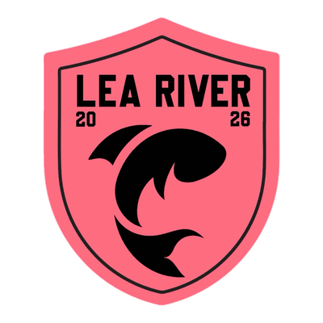

The club
Who we are
Lea River FC is a Sunday league football club founded in 2026. We play in Hackney & Leyton Sunday Football League, Division 3, with home games at Hackney Marshes in east London.
We are named after the River Lea, which runs down through the marshes and out to the Thames. The fish on the badge is for the river; the year is for the season we started.
Our colours
We play in pink and black. It is a nod to Palermo, whose rosanero shirts have carried that combination since 1907, and it makes us very easy to spot on a foggy morning at the Marshes.
Where we play
Hackney Marshes is the largest area of public football pitches in Europe, and home to Sunday league football in London for the better part of a century. Nearest stations are Hackney Wick and Homerton. Exact pitch number TBC
The league
Hackney & Leyton Sunday Football League runs Sunday morning football across east London. We are in Division 3 for our first season, with ten league fixtures between September and December. The full list is on our fixtures page.

What we are about
Open to anyone
New club, new squad. If you can get to the Marshes on a Sunday morning, we want to hear from you.
Play properly
Sunday league has a reputation. We would like to be the side that turns up on time, plays football, and shakes hands afterwards.
Local
The Lea Valley is the point. We are a club for the people who live along it, and the pink is not going anywhere.
Club officials
Squad and committee details will be listed here once confirmed. Staff TBC